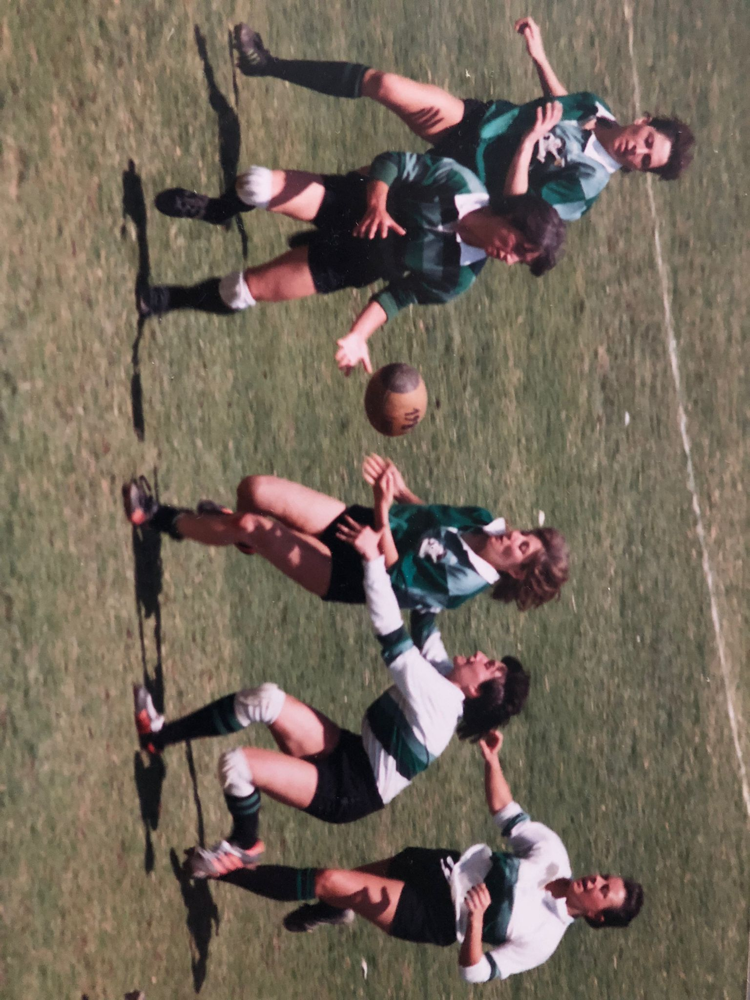

Naixement del Club Esportiu INEF Barcelona.
El club
Història del Rugby INEF Barcelona
Una entitat nascuda a Barcelona, vinculada a l’INEFC i marcada per una identitat pròpia: el verd, la formació, el rugby universitari i una trajectòria pionera dins del rugby femení.
Orígens
Un club arrelat a l’esport universitari
El Club Esportiu INEF Barcelona és un club poliesportiu fundat l’any 1976 i vinculat amb la creació de l’INEFC. La seva raó de ser neix de la voluntat de potenciar la pràctica esportiva dins de l’àmbit universitari i formar persones a través de l’esport.
La secció de rugby es va consolidar molt aviat dins del club. Impulsada pel Dr. José Antonio Sancha de Prada, professor del centre, la secció federada masculina va aparèixer el 1977 i, dos anys més tard, es va posar en marxa la secció femenina, considerada pionera del rugby femení a l’Estat.
Dades del club
Identitat i informació principal
Dades organitzades perquè la pàgina sigui fàcil de llegir i mantenir.
Consolidació de la secció federada de rugby.
Avinguda de l’Estadi, 12-22 · 08038 Barcelona.
Samarreta verda, pantaló negre i mitges negres amb franges verdes.
Cronologia
Moments clau de la història
Una lectura cronològica per entendre d’on ve el club i per què té tanta importància dins del rugby català.
Naixement del Club Esportiu INEF Barcelona
El club neix vinculat a l’INEFC i a la promoció de l’esport universitari a Barcelona.
Primers passos federats del rugby
La secció de rugby agafa força dins del club i es consolida en l’àmbit federat.
Impuls del rugby femení
El projecte femení es converteix en un referent pioner i obre camí al rugby femení a l’Estat.
Consolidació i identitat pròpia
El club construeix una cultura esportiva pròpia, marcada pel verd, la pertinença i el creixement de diferents generacions de jugadores i jugadors.
Etapa de grans èxits
Les Osses acumulen títols estatals i catalans, i moltes jugadores passen a formar part de seleccions catalanes i estatals.
Col·laboració amb RC L’Hospitalet
L’acord permet competir a la Lliga Iberdrola amb el nom d’INEF-L’Hospitalet i reforçar la formació de jugadores de base.
Un club amb memòria i futur
Rugby INEF Barcelona continua defensant una manera d’entendre el rugby basada en la comunitat, el compromís i la formació.
Les Osses
Una secció pionera i referent
Conegudes com Les Osses, les jugadores de l’INEF han estat una de les grans referències del rugby femení. La secció ha destacat per la seva capacitat competitiva, pel seu paper pioner i per haver contribuït al creixement del rugby femení català i estatal.
La seva trajectòria ha deixat un palmarès molt rellevant i una empremta que va més enllà dels títols: generacions de jugadores, entrenadores i persones vinculades al club han ajudat a construir una identitat esportiva reconeixible.

Palmarès
Títols i reconeixements destacats
Aquest bloc està preparat perquè puguis ampliar o corregir el palmarès fàcilment si el club t’envia dades actualitzades.
Rugby femení estatal
- 11 Campionats d’Espanya de rugby femení
- Temporades: 1988-89, 1994-95, 2004-05, 2005-06, 2006-07, 2008-09, 2009-10, 2010-11, 2011-12, 2012-13 i 2015-16.
- 2 Campionats del Món de Clubs
- Subcampionat d’Europa 2008
Competicions catalanes
- Campionats de Catalunya de rugby femení
- Temporades destacades: 2002-03, 2003-04, 2004-05, 2005-06, 2006-07, 2007-08, 2008-09, 2009-10 i 2015-16.
- 6 Copes Catalanes de rugby femení
- Temporades: 2005-06, 2006-07, 2007-08, 2008-09, 2009-10 i 2016-17.
Reconeixements
- Premi al millor club català femení de Mundo Deportivo l’any 2008.
- Trofeu Campions de Mundo Deportivo els anys 2012 i 2013.
- Medalla al Mèrit Esportiu per la trajectòria i contribució esportiva de l’entitat.
Forma part del club
La història continua al camp
Vine a provar, anima des de la grada o col·labora amb un club que segueix creixent des del verd.